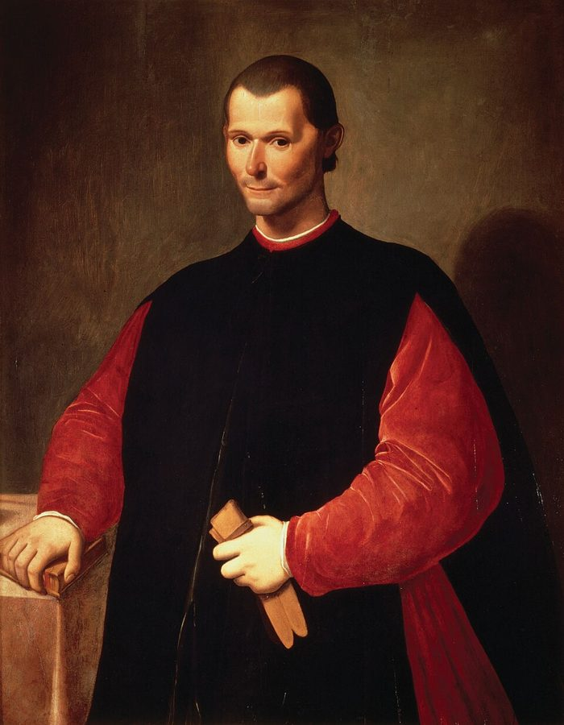

it is harder to fry an egg than buy and sell
… harder to fry an egg than …
煎个蛋都比买进卖出难
章名就出自这句：学会下单买卖不算本事。作者在挖苦那位拿业绩当招牌的经理。
第二部讲「好纪录靠不靠得住」，这一章是它的技术章。作者从自己一天的日程说起：看牙医、听钢琴、看雕塑，这些本事都很难靠运气装出来；明天要见的基金经理却不一样。接着他用抛硬币「造」出一万个毫无本事的基金经理，一年一年数还剩多少，顺路讲到篮球的连中、狗的个头、一只飞过来的打火机，再把同一笔账搬到荐股信、电视广告、生日和偶遇上。读的时候抓一条线：看到一份漂亮的纪录，想一想没让你看见的那些人。
第 8 章用打字机前的猴子和《隔壁的百万富翁》讲了幸存者偏差：输掉的人不会出现在你眼前。这一章是第二部的第二章，把同一个问题做成算术：作者搬出前面用过的蒙特卡洛「引擎」，造一群明知没本事的经理，一年一年数还剩多少。§2 他回提第 5 章，§9 回提 John 和 Carlos。这一章的后半在下一页，从彩票、书评一路讲到科学论文。
§4 作者把篮球的「热手」当作人看错随机序列的例子，这是 1985 年一项有名研究的结论。2018 年有研究指出那项研究的算法本身有偏差，改正以后，数据里看得到热手。读的时候把这个例子打个问号，详细的在页末。
一个人连续五年赚钱，能说明他有本事吗？
读的时候带着这几个问题。不用先找答案，读完回来对照「检查一下理解」。
§1 是日记式的开头：一天里的三个场景，话锋一转到明天要见的基金经理，再列出这一章要讲的几个统计名词。§2、§3 是全章的发动机：两个思想实验，一个用公平的硬币，一个用对经理不利的罐子，都是一年一年往下数人数。§4 从篮球跳到抛硬币、交易室，又跳到狗的个头，四段里话题换了好几回，是全章最散的一节。§5 换成更技术的说法，中间插进一位朝作者扔打火机的交易员，最后回到「明天上午 11:45」的约会，把开头那条线收住。§6 只有一句话，是个过门。§7 到 §11 是五个很短的小节，每节一个生活里的例子，节奏很快；§10 第一句点出一个统计名词，§11 第二段把它推到电脑上，交给下一页。
这一页是原书和译本第 9 章的前半，一共 11 节（§12 起在下一页）。粗体是本站给的节名，后面是档和译本字数；下面是译本的小标题和这一节在译本电子书里开头的几个字（搜它就能跳过去），再下面是英文原文的开头。「先读」是这一章的骨架，「有空」好看、跳过不丢线，「可跳过」读不读都行。读完打个勾。
先把这一页用到、作者默认你懂的几个概念讲一遍。讲的是概念本身，作者拿它推出什么，读原书时自己看。别页讲过的概念，点链接过去看。
业绩记录是一个投资经理过去管钱的成绩单：哪一年赚了多少、赔了多少，比大盘好还是差。基金招揽客户、投资人挑选基金经理，最常看的就是它。国内基金的宣传材料末尾常印着一句风险提示「基金的过往业绩并不预示其未来表现」，提醒的就是它的局限。
统计上，一份纪录是一个样本。判断它有多少分量，除了看它本身，还要问它是怎么来到你面前的：从多少份纪录里挑出来的，没被挑中的那些去了哪里。下面是一个和书无关的例子。
在这一页：§1 作者明天要见的经理拿它当招牌；§2、§3 的思想实验算的是纯运气能造出多少份好纪录。
把一次成绩看成「本事加运气」。挑出成绩最极端的那批人，他们多半既有本事、又碰上了好运气；下一次本事还在，运气却不会专门跟着他们，于是成绩往平均靠回来一些。这个说法来自十九世纪的高尔顿（Galton）：特别高的父母，孩子平均也偏高，但没那么高。
程序员的例子：某个迭代线上事故少得出奇，下一个迭代多半会多回来一点，不必急着表扬或问责。它不是「运气会补偿」（以为输多了就该赢，那是赌徒谬误），也不说连胜的人下一次更容易输；只是说，别把一次极端的结果全算在本事上。
在这一页：§4 作者用篮球、抛硬币和狗的个头讲它；模拟器里的「淘汰期后再看几年」可以看幸存者往后怎样。
这是物理和概率里的词。粗略地说，一个随机过程如果「遍历」，那么一个人沿着时间走很久得到的平均，和很多人同时各走一次得到的平均一样：一个骰子掷一万次，和一万个骰子各掷一次，平均点数相同。
作者在这本书里用得更松：他说遍历性就是时间久了，随机性的效果会被冲掉，幸运的人长期会回到他本来的样子（第 3 章也这样用过）。这更接近大数定律和回归平均。他在 2018 年的《非对称风险》（Skin in the Game）里换了重点，讲的是不遍历：一百个人各进一次赌场，和一个人连进一百次，结果不一样，因为一个人一旦输光，就没有下一次了。本站两种说法都会出现，读的时候分清是哪一种。
在这一页：§5 的标题就是它，打火机那一段的括号里又出现一次。这一页的模拟器演的是本书的用法，第 3 章的模拟器演后一种。
一个房间里有 23 个人，至少两人同一天生日的概率约 50.7%（不算闰年，假设生日在一年里均匀分布）。直觉觉得低，是因为想的是「有人和我同一天」，那只有约 6%。可 23 个人能配出 253 对，任何一对撞上都算。
背后是一个通用的道理：事先不指定找什么，随便哪一种巧合都算数，巧合就会多得惊人。统计学里这叫多重比较：同时检验的东西越多，纯属偶然的「显著」结果就越多。程序员熟悉的哈希碰撞是同一笔账：哈希值的空间看着很大，表里的东西一多就会撞上。
在这一页：§10 作者用它向外行解释一个问题，§11 推到偶遇和用电脑找关系；下一页的数据挖掘接着讲。
先猜：一万个经理，每人每年赚 1 万美元或赔 1 万美元的机会各一半，谁都没有本事，输一年就出局。五年后大约还剩多少人？如果起跑的只有十个人，冒出一个「五连胜」的机会有多大？再点下面的模拟器验证。
设定起跑人数、每年赚钱的概率和淘汰规则，看每年年底还剩多少人。上面的横条是这一次跑出来的人数，下面是前几位幸存者的逐年纪录。先用默认设置看一次，再点「重新跑一次」。
需要浏览器打开脚本才能运行。
各个控件：「起跑人数」是一开始入行的经理数；「每年赚钱的概率」是每人每年赚 1 万美元的机会，剩下的是赔 1 万美元的机会，各年独立，所有人的胜算都一样（50% 就是抛硬币，谁都没有本事；低于 50% 就是 §3 那种期望亏钱的罐子；高于 50% 是人人都有一点本事）；「淘汰期」是连着考核几年；「淘汰规则」是考核期里怎样算出局；「淘汰期后再看几年」是让留下来的人接着干几年、不再淘汰，看他们后来怎样。
统计栏前四个数：按概率算平均会剩几人（精确算出的期望值，书里的数就是它）；这一次随机跑出来实际剩几人；平均会剩的人占起跑的比例；起跑这么多人时，至少冒出一个幸存者的机会。选了「再看几年」，后面再多三个，也是精确算的：幸存者此后平均每年赚多少；此后这几年合起来净赚的幸存者占多少；把考核期和此后合起来，整段纪录平均每年赚多少。「这一次」跑出来的对应数字写在统计栏上面的说明里。
这个模拟器只演一件事：没有本事的人，靠运气能留下多少份好纪录，以后又会怎样。每人每年赚赔金额一样、各年独立，这是最简单的情形。它数的是「五连胜的人数」；§3 说的「最大值的期望」（expectation of the maximum，译本：極大值的期望值）指的是你看得到的最好那几份纪录会有多好，两者相关，但不是同一个量。§7 的骗局和 §8 的广告讲的是这些纪录怎样找上门，模拟器不演。§9 的「两年表现很糟」书里没说是不是连续的，所以给了两种规则。
按在书里出现的顺序排，标题前是节号。只讲到读懂这一页需要的程度。

卡诺瓦（Antonio Canova，1757–1822）是意大利新古典主义雕塑家，以光滑、匀称的大理石人像出名。作者引的拉丁文出自古罗马诗人奥维德（Ovid）的《变形记》第二卷，原本描写太阳神宫殿的银门，意思是「手艺胜过了材料」。马基雅维利那句在《君主论》第 25 章：命运主宰我们一半的行动，另一半留给我们自己。
作者说这句话是「据说」索罗斯对手下的经理们讲的，书里没给出处。管别人钱的经理，一两年业绩不好，客户撤资、老板换人，在对冲基金和投行交易室都是常事，所以思想实验里「输一年就出局」这条规则不算离谱。对冲基金是什么，见对冲基金。
热手（hot hand）是球迷和球员普遍的感觉：一个人连进几球，手就「热」了，下一球更容易进。1985 年，心理学家 Gilovich、Vallone 和 Tversky 在《认知心理学》（Cognitive Psychology）发表研究，分析球员的投篮记录和大学球队的投篮实验，没找到这种效应，认为热手是人看错了随机序列。论文的副标题就是「论对随机序列的误解」，作者 §4 第一句的说法和它一样，正文没点名，书后注释列了这篇论文。这项研究后来怎样，见「今天怎么看」。
1886 年他比较父母和成年子女的身高，发现特别高的父母，孩子平均没有那么高；特别矮的父母，孩子平均没有那么矮。他把这叫「向平庸回归」，今天叫回归平均。作者 §4 说的身高和狗的个头，就是这一类例子，但他没提高尔顿的名字。
「宇宙主宰」出自 Tom Wolfe 1987 年的小说《虚荣的篝火》，主人公是华尔街的债券交易员，暗自以「宇宙的主宰」自居，后来成了讥讽华尔街大人物的说法。1994 年 2 月 4 日，美联储五年来第一次加息，之后一年里又加了六次，把联邦基金利率从 3% 提到 6%。利率一涨，利息低的旧债券就没人要，价格下跌；押利率继续下降、又借钱放大赌注的交易员和基金损失惨重，加州橙县当年 12 月为此申请破产。作者说 A. 手下那批交易员就倒在这场债灾里。
一月效应是学者早有注意、1970 年代起反复研究的现象：美国股票（尤其是小公司的股票）在一月的平均涨幅高于其他月份。所以故事里第一封信说「这个月会涨」，收信人不当回事。离岸基金注册在开曼群岛这类海外地方，监管比本国宽松，钱汇出去以后很难追回，骗子爱用它。骗局本身的算法，模拟器的「起跑人数」一项就能演：一万个名字，每个月只留下收到正确预测的一半。
经济学和保险业的说法：交易的一方比另一方更清楚底细时，主动来跟你做交易的，往往正是对你不利的那一批。保险是典型：最急着买健康险的，常常是最清楚自己身体有问题的人。经济学家 Akerlof 1970 年的《柠檬市场》用二手车讲这个道理（卖家知道车好不好，买家不知道），他因此在 2001 年和另外两人分享了诺贝尔经济学奖。作者 §8 把它用到找上门来的基金上。
读英文原文时值得停一下的词和句：交易员的行话、作者的反话和双关、熟词生义。灰色斜体是原句里连续的几个词，在英文电子书里搜它就能找到；标「每个字都认识」的，是每个词都眼熟、合起来意思却变了的，最容易读错。点「记下」收进词本。
对着译本读这一章时，下面这些地方会把人读歪。方框里是译本的原句，在译本电子书里搜它就能找到；灰色斜体是英文原文那一处。只收意思错了、反了、漏了的，措辞上的出入和台湾用语不收。全书的勘误汇总在译本勘误。
… materiam superabat opus comes to mind …
译本：「鬼斧神工超越作品」
这半句拉丁文的意思是做工胜过了用料。作者借它说，卡诺瓦雕像好在手艺，不在大理石，这正是运气装不出来的那部分。「超越作品」说不通，读不出作者为什么在这里想起它。
… average-sized parents produce a large litter …
译本：「產下體型很大的小狗」
large litter 是一窝的只数多，不是小狗个头大。原文的道理是：一窝里大小参差，其中个头大得离谱的，后代多半没那么大。读成普通父母生出大狗，下一句为什么要往回缩就接不上了。
… for the large outliers is what …
译本：「我們在歷史上見過大離群值的這種「返祖」現象」
reversion 和同一句的 regression 是一回事，高尔顿最早就用过这个词，指极端值往平均靠。「返祖」是另一个概念，指后代重新出现祖先的特征，读者会以为在讲遗传上的隔代相似。
… a then Master-of-the-Universe type …
译本：「幾年前，我對那時的「太空超人」甲說」
Master of the Universe 是 Tom Wolfe 小说里华尔街交易员的自况，后来专门讥讽不可一世的交易员。「太空超人」读来像个卡通外号，读不出 A. 是一位正得意的交易部门主管，下文他为什么被这句话激怒也就淡了。
… what is called the birthday paradox …
译本：「所謂的生日詭辯」
paradox 指看似荒谬、其实成立的结论；作者紧接着说它算不上悖论，只是直觉上的怪。「詭辯」是故意歪曲的狡辩，读来像有人在耍花招。中文通行的叫法是「生日问题」或「生日悖论」，查资料用这两个词。
… these are not improbable occurrences …
译本：「但這種事情並非沒有發生的可能」
not improbable 是并不罕见、相当可能发生。作者的意思是这种偶遇其实很常见；译成「并非不可能」，口气弱了好几级，下文说它的机会比指定的那种偶遇高几千倍，就接不上了。
… odds are that the results can …
译本：「結果很可能讓人信以為真」
原文是：先定好要检验哪一种关系再看数据，这样的结果多半可以认真对待。「信以为真」是把假的当成真的，意思正好反了。这一段对比的是两种做法：事先指定的检验靠得住，漫无目的地找才会冒出假关联。
读完这一章再看。下面是作者在这一页几节里的主张，由本站按主张之间的逻辑重新组织，不按原书的顺序；每条后面是节号，拿不准就回书里那一节再读一遍。
他用蒙特卡洛（他说抛硬币、做代数也行）造一万个明知没本事的经理：公平的游戏，五年后剩约 313 个五连胜；期望每年亏 1000 美元的罐子，也剩 184 个，不到 2%。他说全是庸才的一群人，也会产出少数几份漂亮的纪录，波动反而帮了坏决策。
§2 §3他说一个人过去赚过钱，这个信息单看本身既无意义也不相干；要知道有多少人试过又失败了。好纪录的多少，更取决于入行的人数和波动，而不是每个人的胜算。起跑十个人，他愿把一半积蓄交给胜出者；起跑一万人，他不看结果。他也留了余地：有些时候纪录可以信，只是不多。
§1 §3 §5他说偏离常态越远，越可能是运气而非本事，并提醒不是所有偏离都这样，只是不成比例地多。幸存者往后任何一段时间都只能预期打平，不比早早出局的人强，他把这叫遍历性。佐证是他的经历：朝他扔打火机的 A. 手下那批交易员，1994 年债灾后几年，他几乎找不到还在交易的。
§4 §5他说主动来推销的投资，本身就被运气筛过，评估它要比你自己去找的更严，这是逆向选择；神秘荐股信是人为造出幸存者的骗局。反过来，胜算很大的人也可能两年不顺就出局，于是人们去冒「大多时候不错、却有爆仓风险」的黑天鹅风险求存，像 John 和 Carlos。
§7 §8 §923 个人里有两人同一天生日的机会约一半，因为任何一对都算；偶遇熟人也一样，我们算的是和任何熟人在任何地方碰面，他估计也许（perhaps）比指定的那一种高几千倍。事先定好检验什么，结果多半可以认真对待；拿电脑漫无目的地找任何关系，他说一定会冒出假关联。
§10 §11合起来：看到一份漂亮的纪录，先别问他有多聪明，先问有多少人和他一起起跑、输掉的人去了哪里，再看往后几年他会不会回到平均。作者没说业绩全是运气，他说的是：光凭纪录，你分不出来。
The information that a person derived some profits in the past, just by itself, is neither meaningful nor relevant.— §5。本站译：一个人过去赚过一些钱，这个信息单看本身，既没有意义，也不相干。
下判断的一句，口气很满，但关键在 just by itself：他不是说纪录毫无用处，而是说光有纪录、不知道起跑人数时没有用。下一句他就补上了要知道什么。译本：「單單它本身既無意義，也無關緊要」把限定词留住了。容易被误读成「过去的业绩全是噪音」，作者在 §1 自己说过，有些时候纪录可以信。
Remember that nobody accepts randomness in his own success, only his failure.— §5。本站译：记住，没人承认自己的成功里有运气，只在失败时才承认。
这是作者从打火机事件里得出的人性观察，用的是 nobody 这种全称的说法，依据是他自己的经历，不是实验。心理学里有个相近的概念叫自利性归因：把成功归给自己，把失败推给外界。读的时候留意它和这一章的算术不是一回事：硬币经理证明的是纪录分不出运气，这一句讲的是人为什么不愿承认。
这本书 2004 年出第二版，书里讲的多是 1980–2003 年的事。下面挑出这一页里能被后来的研究或事情检验的说法，分「书里 / 当时 / 今天」几栏，并给一个结论。结论判的是标题里「书里的说法：」后面那一句。全书的这一节汇总在今天怎么看。
读完作者的主张，再看它站不站得住。每一块摆出三样：主流怎么看，作者怎么看，本站的评论。最后一句是本站对这一页的总体判断。
主流看法：金融学界普遍承认，凭几年业绩很难分辨本事和运气：基金收益的波动大，样本又短。Fama 和 French 2010 年、Barras、Scaillet 和 Wermers 2010 年都拿「纯运气会造出多少好业绩」当对照，检验真实的基金；后者估计，有本事（真有正超额收益）的基金在 1996 年以前还占一定比例，到 2006 年几乎找不到了。
作者的看法：好纪录单看本身既无意义也不相干，要知道起跑人数；起跑一万人，他就不看结果。§3 §5
本站的评论：这个思想实验证明的是「光凭纪录分不出」，不是「真实的经理都是硬币」。这一点很硬，后来二十年的基金数据也大体站在他这边。但有一处说过头：起跑十个人时，纯运气冒出一个五连胜的机会也有 27%，「眼都不眨交出一半积蓄」是修辞。另外，纪录之外还能看别的：他靠什么赚钱、冒什么风险。作者自己在 §5 也说，见面要先问对方怎么交易。
主流看法：在物理和概率里，遍历指时间平均等于总体平均。物理学家 Ole Peters 2019 年在《自然·物理》发文，主张经济学长期默认了遍历，把期望值当成一个人长期会得到的结果；这套「遍历经济学」很受关注，也有不少经济学家批评它新意不大、可检验的推论少。
作者的看法：遍历性是时间会消掉随机性的烦人效果，幸存者往后只能打平；A. 那批交易员几年后几乎都不见了，他也叫遍历性。§5
本站的评论：这里说的其实是各年独立加回归平均：过去的运气不影响将来，所以幸存者往后只能打平，模拟器演的就是这个。作者在《非对称风险》里把重点换到了「不遍历」：一个人输光就再没有下一局，群体的平均代表不了个人的命运。按这个后来的说法，A. 手下的交易员爆仓离场，恰恰是不遍历的典型。读这本书时，把这里的遍历性当成「长期看，运气会被冲淡」就够了，别和后来的定义混在一起。
主流看法：回归平均来自高尔顿的身高研究：两次测量的相关不完全时，第一次极端的，第二次平均会往中间靠。热手问的是另一件事：这一投的结果和上一投有没有关系。前者讲挑出极端值以后会怎样，后者讲序列是否独立。
作者的看法：热手是误读随机序列，是回归平均的表现；偏离越大越可能来自运气，但不是所有偏离都这样，只是不成比例地多。§4
本站的评论：§4 把三件事拧在了一起：热手（序列独不独立）、很长的连胜（人数多了必然出现）、回归平均（极端值下一次往回靠）。核心句「偏离越大，运气成分越可能越大」在「成绩等于本事加运气」的模型里是对的，统计上的收缩估计就是这么做的，很实用。但说热手「是回归平均的表现」并不准确，而热手本身也被后来的研究改写了。
本站的总体看法：一万个硬币经理是这一章最干净、最值得带走的论证：光凭纪录分不出本事和运气，先问起跑有多少人。后来二十年的基金数据大体站在作者这边。要打折扣的是周边的说法：热手的例子被改写了，这里的「遍历性」是他自己的松散用法，十个人、五百封信这些数是修辞和举例。
先在心里答，再点开。答错的那题，回书里把对应那一节再读一遍。
一点也没有，每人每年赚钱的机会始终是一半。作者说分析师和传记作者会从他的风格、童年、父母的榜样里找原因；他下一年不再出色，又会怪他工作松懈、生活挥霍。真相只是运气用完了。
期望是负的，但每年的结果有波动，赚赔各 1 万美元，总有人连着赚。五年后剩下 184 人，不到 2%。作者说波动反而帮了坏的投资决策。
甲约 3 人，乙约 313 人。乙的「明星」多一百倍，只因入行的人多一百倍，不因为谁更有本事。所以作者说，看到一份好纪录，要先知道它是从多大的人群里冒出来的。
0 美元。每年仍是一半赚一半赔，过去的运气不影响将来，作者说他们不会比早早出局的人强。他在这里把这叫遍历性。
第四封后 625 人，第五封后约 313 人。书里「缩到 500 人、其中 200 人上钩」是举例的整数。收信人看到的是一连串全对的预测，看不到另外几千人收到的错信。
跑输的基金不会来打广告，找上门的那一只已经被运气筛过一遍。作者说这是逆向选择：自己去一万个经理里找，碰上假幸存者的机会约 2%；待在家里等门铃响，来推销的是假幸存者的可能接近百分之百。
不奇怪。40 个人里至少两人同一天生日的概率约 89%，因为任何一对都算，40 人能配出 780 对。要是指定「有人和我同一天」，机会才约 10%。
用一句话说这一页：
想一想：你挑过的东西里（一本畅销书、一个热门的开源库、一位博主推荐的理财产品、一个「从不出错」的同事），有没有哪一样，你只看到了它的好纪录，却不知道有多少同类没让你看见？
读过又忘了，从这里想起来。挑的是这一页最值得记住的故事和说法，不按原书顺序；每条后面是节号，想细看就回书里那一节。全书各页的这一节都收在全书回顾。
一句话：一份好纪录，先问它是从多少人里挑出来的：一万个抛硬币的人，五年后也有三百多个常胜将军。
每人每年赚赔 1 万美元的机会各半，输一年就出局。五年后还剩 313 人，个个五连胜，按设计没有一个有本事。
§2作者说，起跑只有十个人，他愿把一半积蓄交给胜出的那位；起跑一万人，他就不看结果。纪录的分量，取决于它是从多少人里冒出来的。
§5作者对一位华尔街大人物说纪录没他想的那么要紧，对方朝他扔了打火机。那批「了不起的交易员」后来倒在 1994 年的债市里。
§5骗子把一万个名字分两半，分别寄看涨、看跌的信，只给猜对的那一半继续寄。几轮下来，剩下的人收到的全对，其中不少人就把积蓄交给了他。
§7房间里 23 个人，有两人同一天生日的机会约一半，因为不指定是谁，任何一对都算。
§10